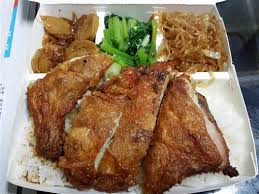
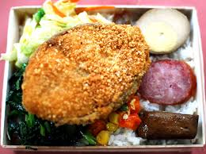

便當種類
- 雞腿便當 
- 排骨便當
- 魚排便當 
使用特選國產雞腿肉，裏上獨家香料粉，醃製入味…酥炸後外皮酥脆，腿肉鮮嫩，一口咬下肉汁十足!

以大裡脊排骨製作，原本是日本的定套餐的主要菜餚，引進台灣後，經過改良，逐漸衍變成台灣的在地小吃，經便當族食用後，廣為大肆推傳，而成為了現在普遍的排骨飯。排骨飯及類似的豬排飯是台灣最常見午餐、晚餐外食菜肉飯；取用約莫掌大般豬排肉配飯，佐以蔬菜、辣椒蘿蔔乾，淋上醬汁，與火雞肉飯、肉燥飯大街小巷普及食用之正餐。可分為裹麵漿的軟炸，和裹地瓜粉，麵粉，或是麵包粉的乾炸。
食用心得:我真的很喜歡吃排骨便當，小時候媽媽都在農忙的時候，買一個排骨便當放在桌上給我當午餐
採用新鮮的魚肉，切成薄片，整片的魚肉，給您口感滿分,炸的酥脆的魚肉，再度驚艷你我的味覺！
雞腿便當
排骨便當
魚排便當